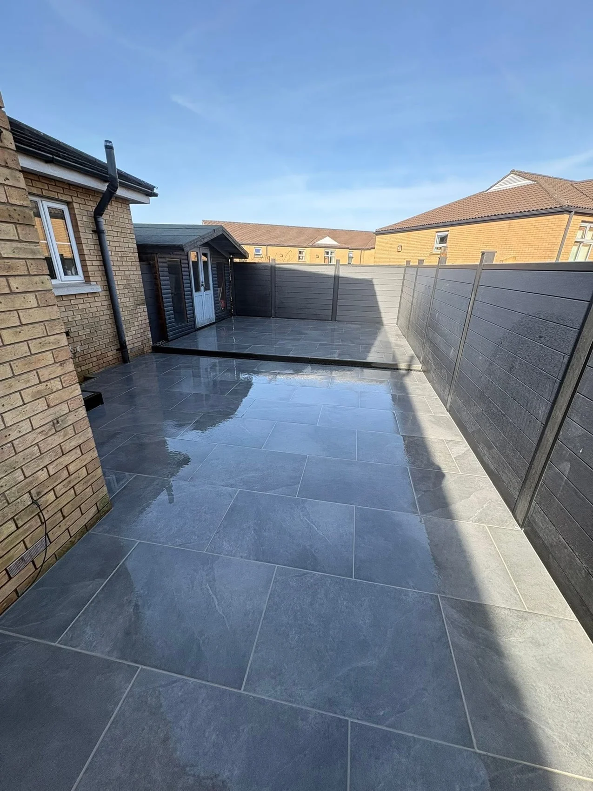

Your information
The enquiry form keeps entered details in this browser session only. It does not submit or store information on a server. This website includes no analytics or advertising scripts. Hosting providers may process technical connection logs.